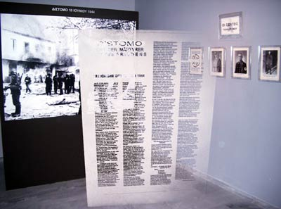

|
Zum 61. Mal begingen die Bürger des griechischen Ortes Distomo (bei Delphi) den
Jahrestag des Massakers vom 10. Juni 1944, bei dem deutsche SS-Soldaten
218 Bewohnerinnen und Bewohner auf bestialische Weise ermordet hatten.
Wie in den vergangenen Jahren wurde der Jahrestag mit einer Reihe von Veranstaltungen
- überwiegend kultureller Art - begangen. VertreterInnen des AK-Distomo nahmen an
den Feiern teil, um ihre Anteilnahme mit den Opfern und ihre Solidarität mit deren
Angehörigen und den Überlebenden des Massakers auszudrücken.
Am Abend des 9. Juni trat die berühmte griechische Sängerin Maria Farandouri in einem
großen Innenhof unter freiem Himmel vor etwa 300 BewohnerInnen auf. Es war ein sehr
beeindruckendes Konzert, dass den Menschen aus Distomo und dem Widerstand gegen den
Faschismus gewidmet war.
Zuvor hielten der Bürgermeister Loukas Papachristou und Ioannis Stamoulis, der ehemalige
Präfekt der Provinz Böotien (in der Distomo liegt) kurze Ansprachen. Stamoulis, der als
Rechtsanwalt für die Entschädigung der Angehörigen der Ermordeten aus Distomo streitet,
berichtete über den Stand der juristischen Auseinandersetzung. Bis heute konnte das
rechtskräftige Urteil des Areopag (oberstes griechisches Gericht) im Fall Distomo,
wonach die BRD den Überlebenden eine Entschädigung in Höhe von ca. € 28 Mio. schuldet,
nicht umgesetzt werden. Derzeit wird versucht, das Urteil außerhalb Griechenlands zu
vollstrecken. In Italien sind diese Bemühungen bislang am weitesten gediehen. Stamoulis
forderte nochmals von der Bundesregierung, ihre Verpflichtung gegenüber den Opfern und
Hinterbliebenen endlich zu erfüllen.
Am Freitag, den 10. Juni, fand dann die eigentliche Gedenkfeier statt, die traditionell
mit einem Gottesdienst beginnt. Im Anschluss ging es dann in einer Art Prozessionszug
durch den Ort zur Gedenkstätte, die sich auf einem Hügel am Rand des Dorfes befindet.
Dort hielt der Bürgermeister Papachristou eine Ansprache, danach wurden die Namen der
Ermordeten verlesen. Die Trauer der Menschen bei dieser Zeremonie war spürbar, kaum
jemand lebt in Distomo, der keine Angehörigen verloren hat. Im Anschluss erfolgte eine
Kranzniederlegung durch den griechischen Staatspräsidenten Karolos Papoulias, dessen
Anwesenheit in diesem Jahr eine Besonderheit war.
Nach der Gedenkfeier wurde das soeben fertig gestellte Museum für die Opfer des Nazismus
eröffnet. Der Staatspräsident hielt die Eröffnungsrede, in Anschluss wurde ihm die
Ehrenbürgerschaft von Distomo verliehen. Papoulias hatte sich in seiner Zeit als Abgeordneter
der PASOK (Sozialdemokraten) stets für die Entschädigung der Opfer von Distomo und der vielen
anderen Orte deutscher Verbrechen in Griechenland eingesetzt. Am Rande der Feierlichkeiten
äußerte er, dass er eine politische Lösung der Entschädigungsfrage für notwendig erachte.
Das neue Museum stellt auf einer Texttafel die Geschichte des Massakers dar, zeigt
Zeitungsausschnitte aus den Jahren 1944 und 1945 und Aufnahmen von den Tätern. Vor
allem aber sind Portraits aller Ermordeten ausgestellt, wodurch ein sehr emotionaler
Eindruck entsteht. Das Museum ist in erster Linie ein Ort für die Menschen aus Distomo
selber, welche die Erinnerung an das Verbrechen und an ihre Toten wach halten wollen.
Eine spätere Erweiterung des Museums ist vorgesehen.

Der 10. Juni 2005 könnte auch für die Frage der Entschädigung eine erneute Wende eingeleitet
haben. Denn genau an diesem Tag entschied das Oberlandesgericht Patras in einem Klagverfahren
der Bürger von Kalavryta (wo die Nazis das folgenschwerste Massaker während der Besatzung
Griechenlands angerichtet hatten), dass das Verfahren ausgesetzt und dem Europäischen Gerichtshof
in Luxemburg vorgelegt werde. Das Gericht folgte damit einem Antrag der Anwälte der Überlebenden
von Kalavryta, welche über die Entscheidung höchst erfreut waren.
Der EuGH hat nun zu entscheiden, ob die Bundesrepublik sich nach europäischem Recht auf den
Grundsatz der sogenannten Staatenimmunität berufen kann, wenn in Griechenland Klagen gegen
sie erhoben werden. Dieses war bislang der Haupteinwand der BRD gegenüber
sämtlichen der ca. 50.000 Entschädigungs-Klagen griechischer Bürger wegen NS-Verbrechen.
Entschiede der EuGH im Sinne der Kläger, wäre europaweit der Weg für sämtliche NS-Opfer frei,
den deutschen Staat auf Entschädigung zu verklagen.

|